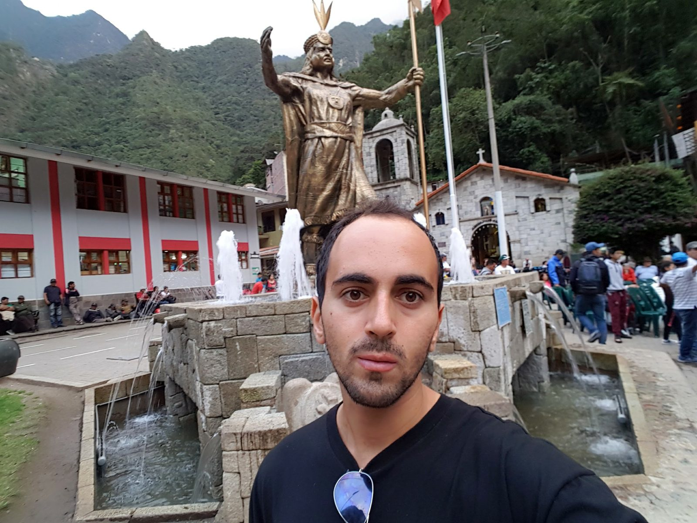
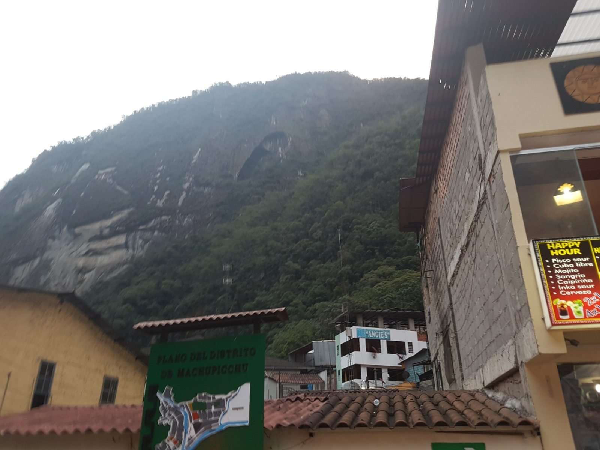
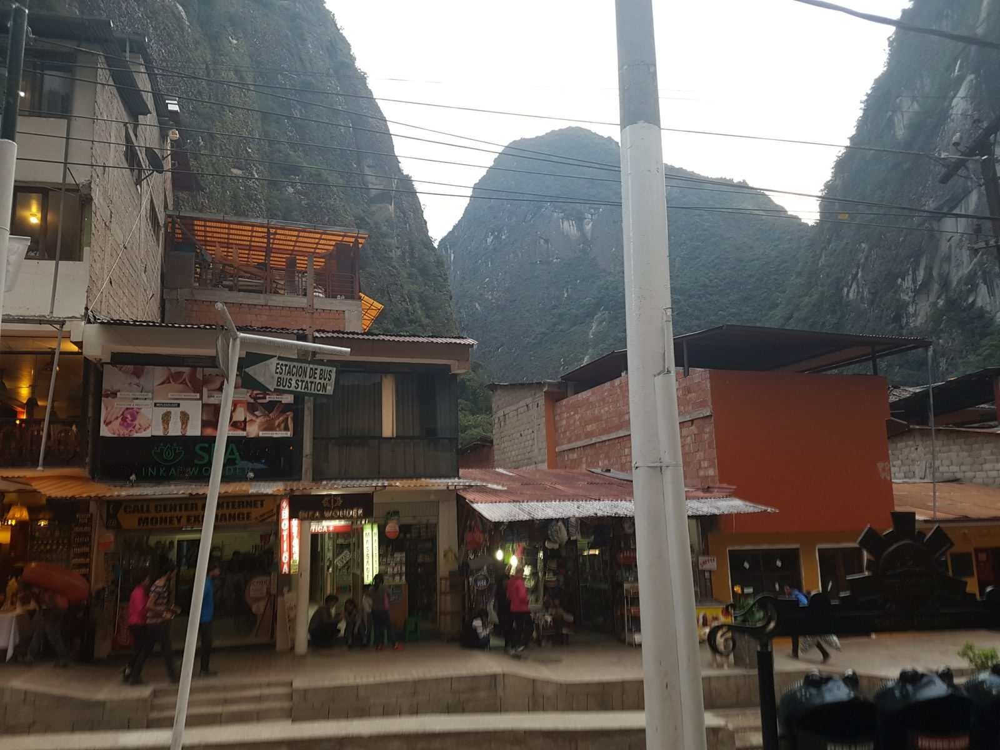
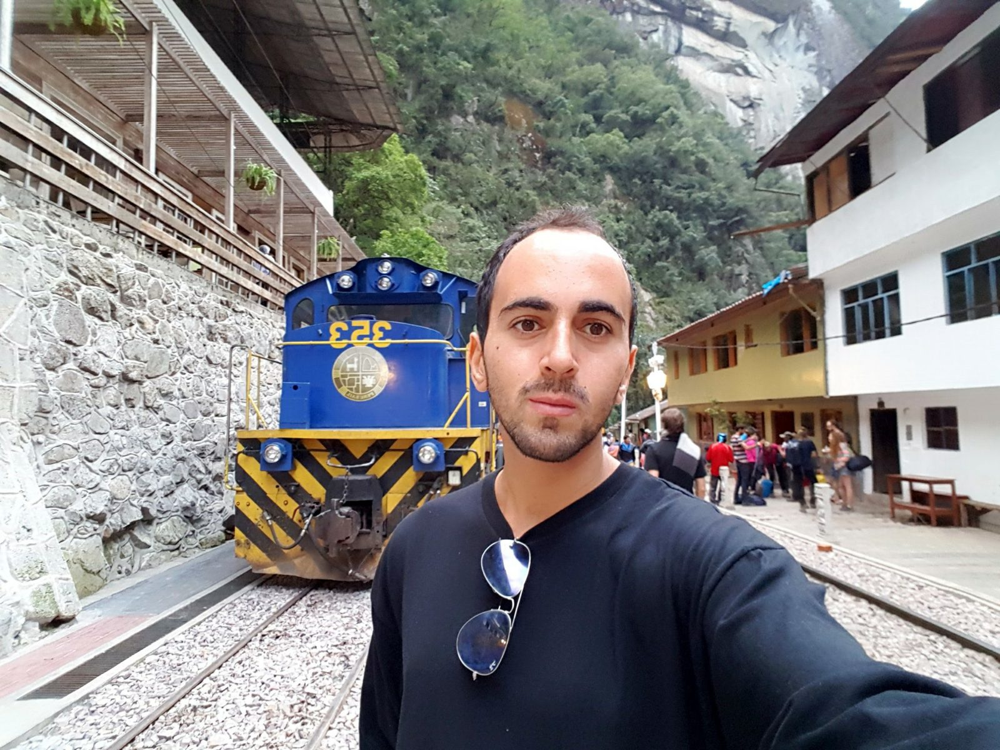
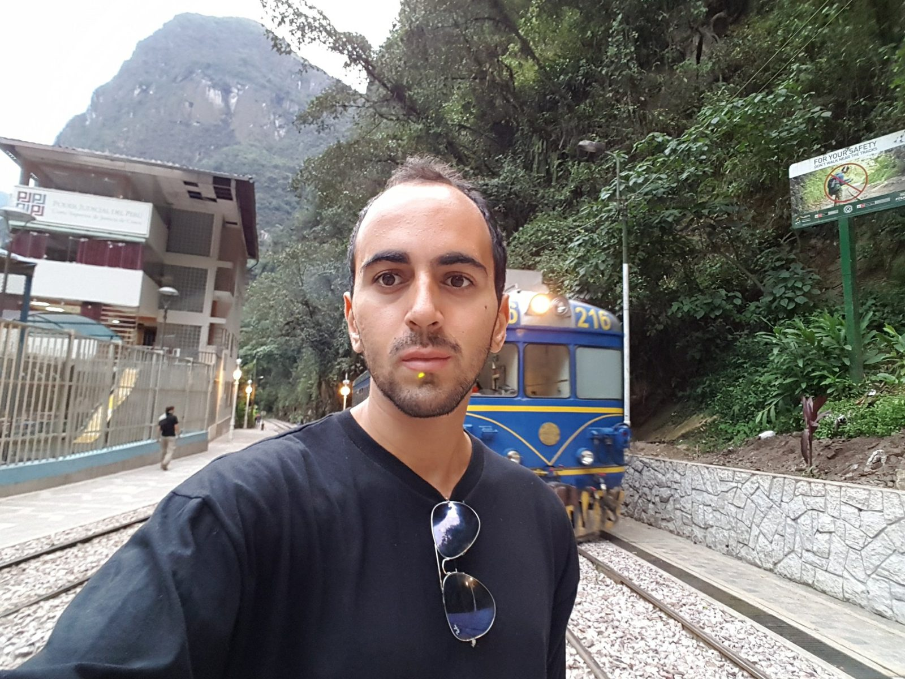
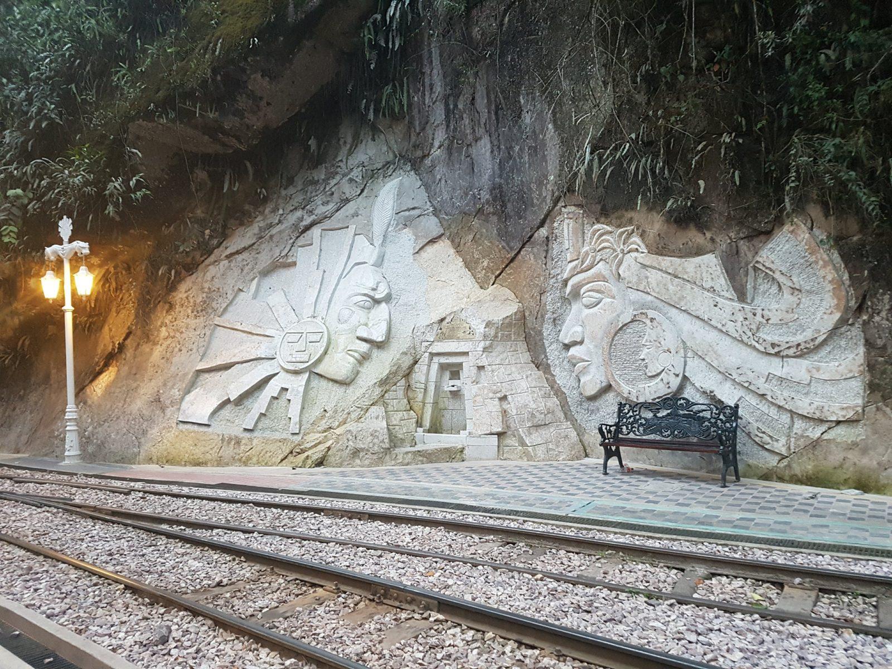
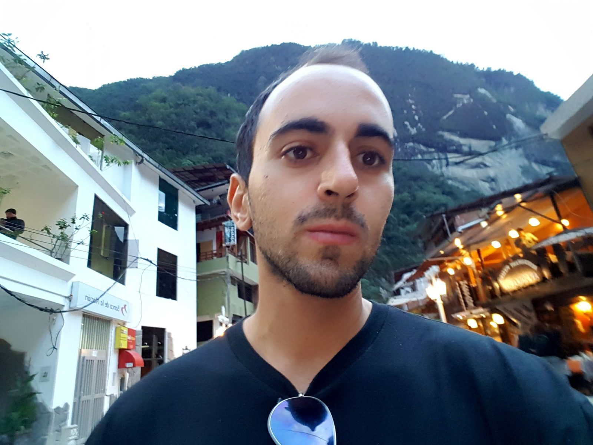
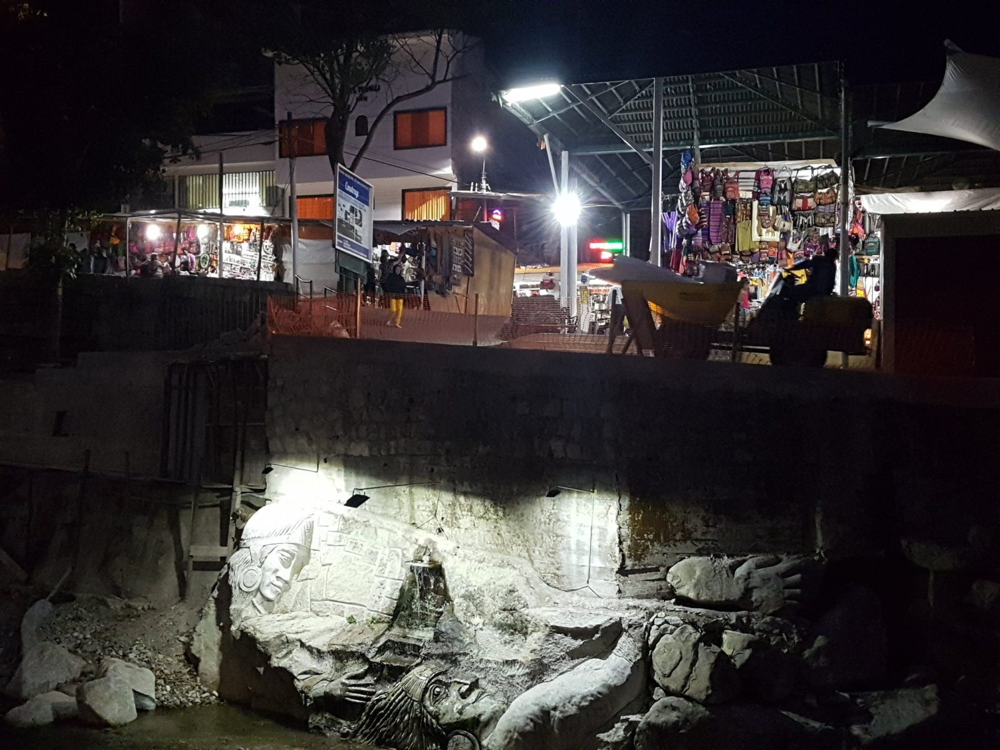

South America · Peru · Aguas Calientes
Aguas Calientes, October 5, 2017
Aguas Calientes, officially Machupicchu Pueblo, is the town at the bottom of the valley where the Inca Jungle route ends. Everyone goes up to Machu Picchu from here, by bus or on foot. This chapter covers the evening of October 5, 2017, as my photos show it. Google Photos places my evening photos in Machu Picchu Pueblo. I do not remember where I slept, how I got into town from the river, or what I ate, so I do not write about them.
The main square
At 17:27 I took a selfie in the main square, in front of the bronze statue of the Inca ruler Pachacútec and the small stone church. A travel guide calls this square Plaza Manco Cápac, also known as Plaza Pueblo Machu Picchu, and mentions the statue as a photo stop (Nick Kembel, updated June 2, 2026). I changed into a black t-shirt by then.

A street, a sign and a map
At 17:32 I photographed the steep hill behind the town from a side street. On the right is a bar's happy hour board listing pisco sour, mojito and beer, with a two-for-one offer. On the left is a green sign headed "Plano del Distrito de Machupicchu" with a map of the town. I do not remember whether I went in, and the board is from 2017, so prices and offers are not current.

The railway through the town
There is no road into Aguas Calientes. The railway runs straight through the middle of town, and people walk beside the tracks. At 17:32 I photographed a street with a bus station sign, and at 17:34 I took a selfie next to a blue locomotive numbered 353.


A few minutes later a passenger train came towards me while I took a selfie. A green sign on the right reads "For your safety, don't walk near the tracks". I was close to the tracks for this photo, and the sign is a fair warning. I have not checked what the rules about the tracks are today.

At 17:38 I photographed stone reliefs carved into the rock beside the railway, with a lamp and a bench in front.

At 17:41 I took another selfie in the street, in front of white buildings and restaurants with their lights on. A "Banco de la Nación" branch is on the left.

Peru plays Argentina
The evening turned into something I had not planned. There was a big screen in the main square, and nearby a banner read "¡Arriba Perú!". The scoreboard in my videos reads ARG 0-0 PER. That is Argentina against Peru, a World Cup qualifier played on October 5, 2017 at La Bombonera in Buenos Aires, which ended 0-0 (FourFourTwo; Perfil, October 5, 2017). My videos are tagged Aguas Calientes in Google Photos, and one of them starts at a restaurant table that looks onto the square, so I probably watched from a restaurant there, but I no longer remember which one.
What I remember is how much it mattered. Excitement like that over a football match is not something to take for granted. It was love of country, in the Peruvian way, and the whole square felt it. I have left out the clips where strangers' faces are close to the camera, and the sound is off.
The stone relief at night
At 18:07 I photographed a lit relief carved into the rock by the stream, with the market stalls above it.

I do not remember how I went up the next morning, so this is research and not my experience. A guide lists the shuttle bus operator as Consettur, running from Aguas Calientes to the entrance from 5:30 to 15:30, with return buses from 6:00 to 18:00. It gives the fares as $23 one way and $35 return, a ride of 30 to 40 minutes uphill, tickets sold up to 7 days ahead and valid for 3 days. It says booking is not required but is recommended from June to August, and that in peak season you should queue by 4:30 for the 5:30 bus. Buying the ticket the day before at the office in town avoids the morning line (The Only Peru Guide, page modified September 25, 2026).
The entrance ticket to Machu Picchu itself is a separate purchase. The Ministry of Culture's 2025 rules say tickets are sold only through the official site, tuboleto.cultura.pe (Andina, November 3, 2025). The next chapter covers it.
The town's hot springs: one guide gives the entry as 20 soles with a locker, opening at 5:00, and 5 soles each to rent a towel or a swimsuit (Nick Kembel, updated June 2, 2026). I did not go, so I cannot say what they are like.
What I do not remember
Where I slept, what I ate, which restaurant I watched the match from, and how I travelled up to Machu Picchu. That chapter starts with the photos from October 6.
Previous: Zipline and the river, October 5.